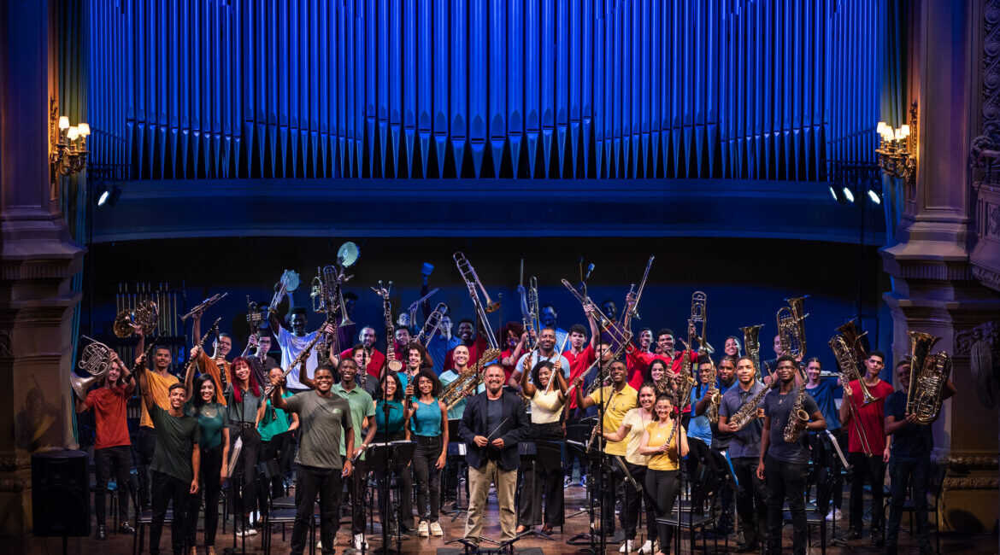
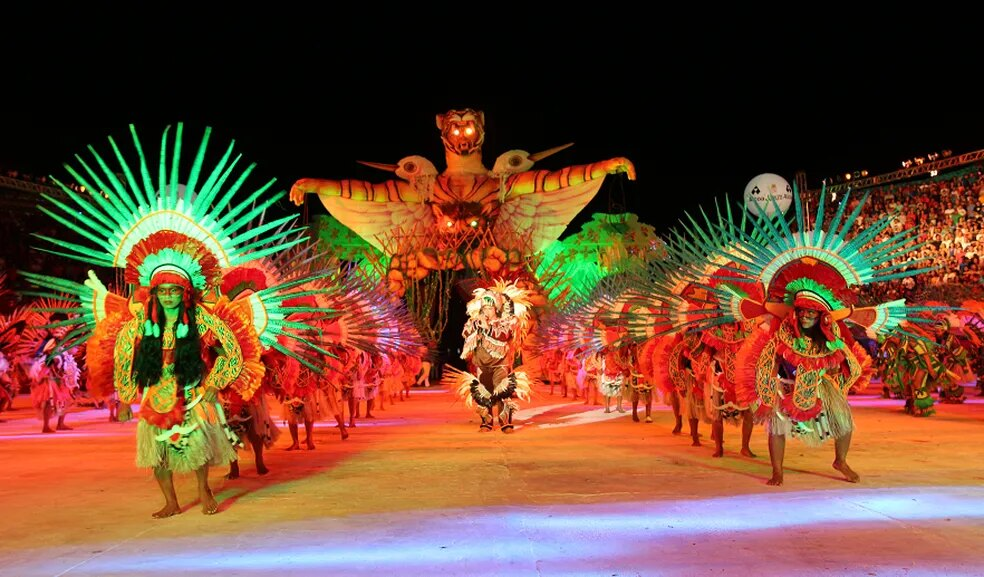

EVENTOS.
Eventos, produções e histórias reunidos em um acervo vivo, do mais recente para o mais antigo.
Institucional Cadillac
Acervo de eventos

Vert Battle

Dominguinho

Itacoatiara Pro

Tamo Junto BB

CCBB + MAC Bahia

Connect Heroes

Mr. Moo Festival

Arte em Circuito
